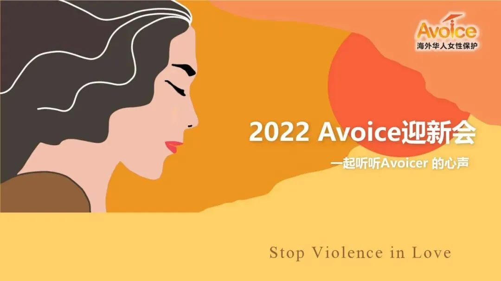

2022Avoice秋季迎新会，参会的主要成员分别是加入Avoice的新成员、各部门负责人以及Avoice的发起人，本次迎新会的目的在于帮助新成员更全面地了解Avoice的发展历程与未来规划，并为新加入的成员种下一颗向阳而生的“种子”。
Orientation meeting
迎新会流程
合照环节
创始人之声
Avoice联合创始人刘锋、Yimar介绍组织发展历程
负责人之声
各团队负责人欢迎致辞
新人之声
新成员分享自己对于Avoice的理解与看法
团队之声
Avoice成员体验分享
解惑环节
自由交流
Avoice联合创始人 - 刘峰、Yimar
介绍组织发展情况
该环节是为了帮助新成员更好的了解相关内容与知识，更加全面的知道Avoice发起的缘由与起因。
负责人之声
由于时差地理位置的原因，所以通过视频的方式，让大家了解一下每个部门的负责人以及每个部门具体的职能/都是在做些什么，视频在下面啦！！！
新人之声
新来的小伙伴们也用视频的形式展示着满满的正能量，
迎新会上有两位新朋友在线上做了自我介绍，分别是阅历和工作经验都很丰富的吴峻妹和从事科研类工作的Silas。
吴峻妹老师有着15年以上的人事招聘方面的经验，并且在今年有接触公益类的项目以及志愿者的工作，她期待着跟大家未来能够进行有意义的交流合作。
Slias虽然是外国人，但是也很认真的在学习汉语,他很开心认识大家嗷，也希望以后能跟大家有一个很好的相处。
团队之声
对接管理处的谭婕为大家分享了当时她为什么要加入我们并去做这样的项目，并跟大家详细的介绍了一下对接管理处的具体工作内容和流程，以及一些项目成果，她还分享了在对接管理处方面的心得，一个是对于组织发展方面，另一个是对于个人成长方面，也建议大家不要在帮助他人的过程中过度的消耗自己，志愿者也要注意自我关怀的这一点。
合作拓展中心英国分部的负责人Doirs为大家分享了自己组织的初衷以及有关于家暴的特征、难度特点方面，并建议志愿者要主动学习主动的去参与培训，从而提高自己的志愿服务水平。这样也能够更好地保护自己，要增强自己的法律意识，并且永远牢记自己的初心
综合事务部的安妮为大家详细介绍了综合事务部具体的工作内容以及对于女权和男女平等的理解和OKR制度、积分制度的具体内容，回答了一些与志愿时长及证明的问题。
解惑环节
小伙伴们在问卷中提交的问题也有被一一解答嗷，也欢迎大家在以后的工作中，有任何的问题，随时交流和沟通！
自由交流
我们的迎新会结束啦，但是组织的温暖会一直存在哟，希望能和新加入的小伙伴们一起努力，我们一起去创造Avoice更好的未来，也一起未来遇见更好的Avoice和你我！
内容丨Avoice Team
排版、封面制作丨荆艺